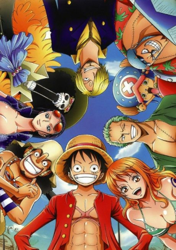

|  |
One Piece+14 → Dub|Leg Ação Estúdio: CloverWorks | 1º temporada Sinopse:
Haruka Sakura não quer ter nada a ver com fracos - ele está interessado apenas nos mais fortes. Lançamentos do Ano Vote: ⭐ ⭐ ⭐ ⭐ ⭐ | Nota Média 9.5 (500 P) |
|
Tanjiro | 25 de Maio O Tokyo Revengers que a gente queria. Basicamente é um Tokyo Revengers que deu certo. Nesse daqui a luta come solta e as lutas são muito bem feitas e os personagens muito daoras Coreografia foi o ponto que mais me impressionou, as sequencias de lutas foram muito bem animadas. 20 de 50 pessoas acharam isto útil. Esta resenha foi útil? SIM | NÃO |
|
Zoro | 5 de Maio O Tokyo Revengers que a gente queria. Basicamente é um Tokyo Revengers que deu certo. Nesse daqui a luta come solta e as lutas são muito bem feitas e os personagens muito daoras Coreografia foi o ponto que mais me impressionou, as sequencias de lutas foram muito bem animadas. 58 de 70 pessoas acharam isto útil. Esta resenha foi útil? SIM | NÃO |
|
Ana | 4 de Abril O Tokyo Revengers que a gente queria. Basicamente é um Tokyo Revengers que deu certo. Nesse daqui a luta come solta e as lutas são muito bem feitas e os personagens muito daoras Coreografia foi o ponto que mais me impressionou, as sequencias de lutas foram muito bem animadas. 60 de 100 pessoas acharam isto útil. Esta resenha foi útil? SIM | NÃO |
|
White | 31 de Maio O Tokyo Revengers que a gente queria. Basicamente é um Tokyo Revengers que deu certo. Nesse daqui a luta come solta e as lutas são muito bem feitas e os personagens muito daoras Coreografia foi o ponto que mais me impressionou, as sequencias de lutas foram muito bem animadas. 5 de 30 pessoas acharam isto útil. Esta resenha foi útil? SIM | NÃO |
Carregar Mais Comentarios